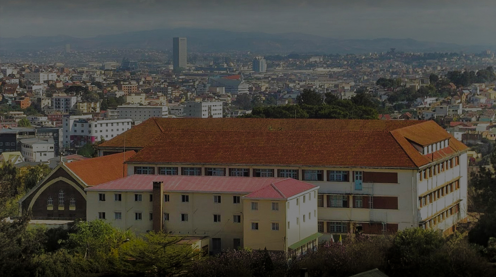

- «NY ho TIA no anjara toerakoao amin'ny Fiangonana»
- «NY ho TIA no anjara toerakoao amin'ny Fiangonana»
- «NY ho TIA no anjara toerakoao amin'ny Fiangonana»
 «NY ho TIA no anjara toerakoao amin'ny Fiangonana»
«NY ho TIA no anjara toerakoao amin'ny Fiangonana»
Les quatre piliers de la formation
.jpg "visite médicale")
La dimension pastorale de la formation en vue du Sacerdoce
Toute la formation sacerdotale est en vue de la pastorale. L’exhortation post-synodale du Pape Jean-Paul II est explicite sur ce point : « toute la formation des candidats au sacerdoce est destinée à les disposer...

La dimension intellectuelle de la formation en vue du Sacerdoce
Il est dit dans le rite d’ordination sacerdotale : « Tu veux, Seigneur, que ton peuple tout entier participe au sacerdoce de ton Fils ; et Tu confies à certains de ses membres la charge de le sanctifier, de...

La dimension spirituelle de la formation en vue du Sacerdoce
La vie spirituelle concerne « la vie selon l’Esprit Saint » (Rm 8,9), « une vie animée et guidée par l’Esprit Saint vers la sainteté et la perfection de la charité » . Appliquée à la vie du prêtre, une spiritualité...

La dimension humaine de la formation en vue du Sacerdoce
Considérée comme « "la base nécessaire et dynamique" de toute la vie presbytérale », « la formation humaine du prêtre revêt une importance particulière en raison de sa relation aux destinataires de sa mission..